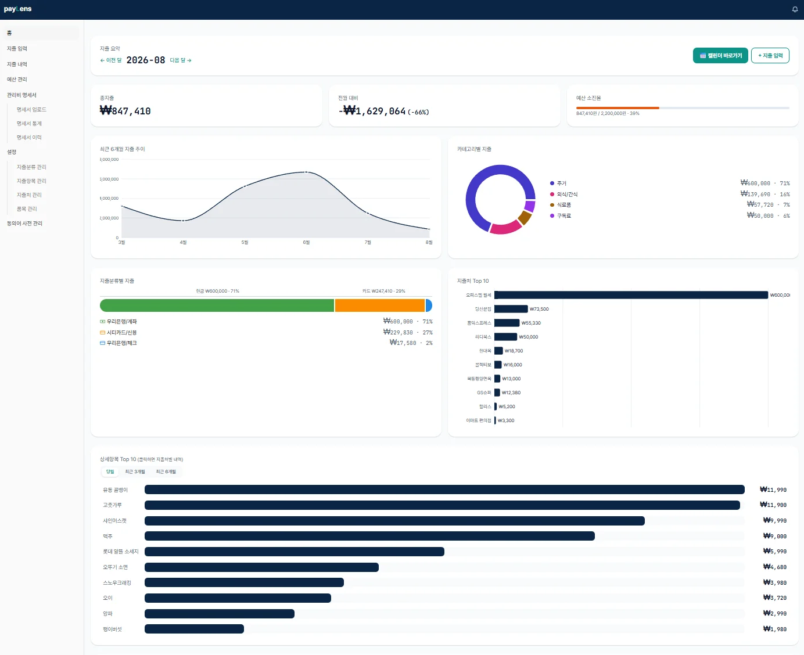
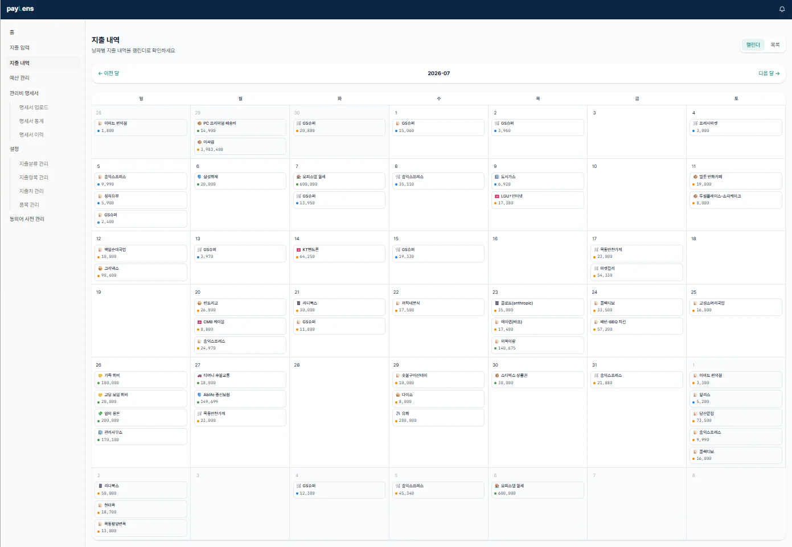
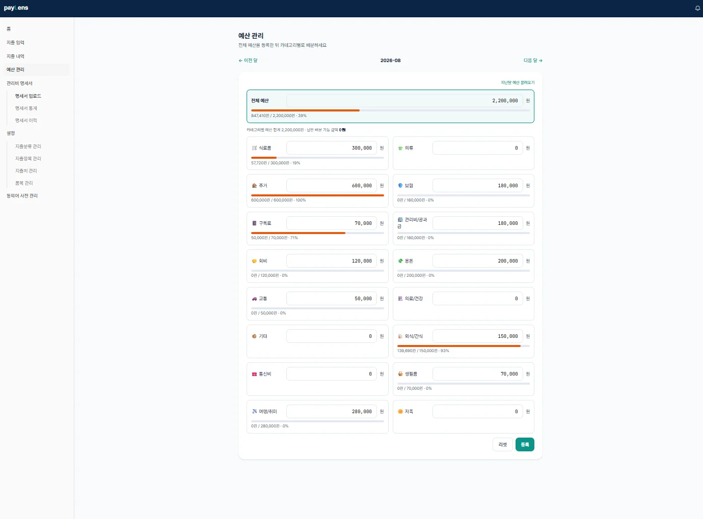
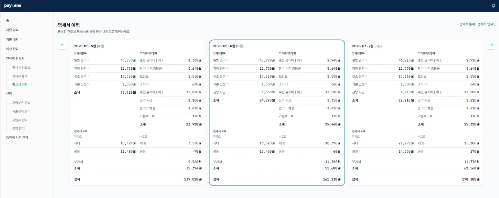

AI 개인 프로젝트
지출 관리 특화 가계부
payLens — “지출을 4개 축으로 쪼개서 보면, 돈이 어디로 새는지 보인다”
“소스 코드를 보지 않고도 AI와 함께 실제 서비스를 처음부터 끝까지 개발할 수 있을까?”를 검증하기 위해 시작한 프로젝트입니다.
기획 단계에서는 Claude·Gemini·ChatGPT를 함께 이용했고, 실제 개발은 Claude Code와 진행하며 토큰 사용량 관리, 코딩 규칙 준수,
무분별한 커밋·푸시를 막는 CI/CD 원칙을 세워 진행했습니다.
가장 놀라웠던 건 실제 개발 과정이 휴먼 개발자와 협업하는 것과 다르지 않았다는 점입니다. 초기 기획의 허점이 개발 중에 드러나 다시 조율해야
했고, 오류의 근본 원인을 기획 단계까지 거슬러 올라가 찾아야 했습니다. 단순한 웹 개발이라면 이제 정말 말로만 홈페이지를 만들 수 있는 세상이
되었다는 걸 체감했습니다 — 지금 이 포트폴리오 사이트도 HTML만으로 만들어졌습니다.
AI 시대의 PM/PO는 단순히 문서를 만드는 역할에서 벗어나, 문제를 정의하고 AI와 개발 과정을 조율하며, 빠르게 만들어진 결과물을 검증하고 개선하면서 높아진 개발 생산성과 속도를 실제 제품의 성과로 연결할 수 있어야겠다고 느꼈습니다.
개요
기존 가계부 앱 대부분은 지출을 “카테고리” 한 축으로만 분류합니다. 그런데 실제로 “이번 달에 왜 이렇게 썼지?”를 알고 싶을 때 필요한 건 카테고리뿐 아니라 무엇으로 결제했는지, 어디서 썼는지, 구체적으로 뭘 샀는지까지입니다. payLens는 지출 1건을 아래 4개의 독립된 축으로 분해해 설계한 지출 관리 특화 가계부입니다.
PM(기획자) 1인이 Claude Code와의 페어프로그래밍으로 아키텍처 설계부터 DB 스키마, 화면 구현, 테스트, 프로덕션 배포까지 전 과정을 주도했습니다. 메인 가계부를 “지출 데이터 허브”로 두고, 이벤트(Webhook) 기반으로 관리비·구독료·카드내역 등 서브앱을 붙일 수 있는 확장형 구조로 설계했습니다.
기획 (PRD·IA)
기획 문서는 아키텍처 설계 → 기능명세(IA) → WBS(작업분해) → 진행현황 4단으로 분리해 관리했습니다. 계획 문서(WBS)는 진행 중 고치지 않고, 진행 상황만 별도 체크리스트 파일에 반영하는 방식으로 “지금 계획이 뭐였는지”와 “지금 어디까지 됐는지”가 섞이지 않게 했습니다 — AI와 여러 세션에 걸쳐 협업할 때 컨텍스트가 흐트러지지 않도록 하기 위한 장치였습니다.
-
가계부_아키텍처_설계
전체 구조도(Mermaid), 지출 4축 데이터 모델, ERD, 로드맵 8장 구성.
-
기능명세서_IA ›
F-코드 기반 기능 명세 + 정보구조(IA), 실제 구현 완료 메뉴 표를 별도로 관리.
-
WBS ›
TASK 단위 세션 추정 + PM 승인 후에만 체크되는 진행 체크리스트.
-
진행현황 ›
WBS.md의 TASK 목록을 체크리스트로 옮긴 진행 현황 문서. TASK 완료 시 PM 확인 후 체크박스만 갱신.
※ 위 설계 문서들은 사후에 정리한 산출물이 아니라, Claude Code와 대화하며 프로젝트 설계를 진행한 원문 그대로입니다.
정보구조(IA) — 전체 메뉴 트리
├─ 0. 인증 — 회원가입 · 로그인(이메일/구글) · 계정 설정
├─ 1. 대시보드 — 개요 · 항목별/지출분류별 통계 · 지출처 Top10 · 상세항목 Top10(드릴다운) · 단가 분석
├─ 2. 지출 입력/관리 — 신규/수정 입력 · 내역 리스트·필터 · 캘린더 조회(+빠른입력)
├─ 3. 마스터 데이터 관리 — 지출분류 · 지출항목 · 지출처 · 품목 · 단위
├─ 4. 예산 관리 — 전체예산 → 카테고리별 한도 · 소진율 게이지
├─ 5. 관리비 명세서 — 2차, 기획 중 (사진 업로드 → OCR → 통계)
└─ 6. 관리자 전용 — 동의어 사전(SYNONYM_DICTIONARY) 관리
※ 위 트리는 최종 계획도이며, 실제 사이드바에는 지금까지 완성된 화면만 노출하도록 별도 표로 관리해 죽은 링크가 생기지 않게 했습니다.
디자인
서비스 자체 BI(브랜드 아이덴티티)로 payLens를 별도로 정의했습니다. 컨셉은 “Refined Navy with Gold Accent” — 신뢰감 있는 네이비 베이스에 데이터 강조용 포인트 컬러를 얹는 방향입니다.
- Focus
- Clarity
- Growth
- Insight
결제수단 태그는 현금(Green) · 체크카드(Blue) · 신용카드(Orange) 3색으로 명확히 구분했고, 오렌지 계열은 “데이터 강조 전용”, 틸 컬러는 “클릭 가능한 액션 전용”으로 역할을 분리해 두 의미가 섞이지 않도록 규칙을 문서화했습니다. 폰트는 본문 Pretendard, 통계 수치는 JetBrains Mono로 자릿수를 맞췄습니다.
개발
- 모노레포 구조 — pnpm workspace + Turborepo로 packages/ui·types·utils·supabase-client 등 공통 코드를 분리해 향후 서브앱(관리비/구독/카드내역) 확장을 고려한 구조로 설계.
- 통계 성능 최적화 — Materialized View(지출분류/품목/단가별 집계) + Redis 캐시로 대시보드 통계를 서빙, 원본 JOIN 대비 최대 6배 빠른 조회 성능을 실측(EXPLAIN ANALYZE)으로 검증.
- DB 보안 — 8개 핵심 테이블 전체에 RLS(Row Level Security) 적용, 9개 테이블 대상으로 타 사용자 데이터 접근 차단을 REST API 레벨에서 직접 검증하는 별도 보안 테스트 작성.
- 입력 UX — 자유 텍스트로 입력한 수량/단위를 자동 구조화(예: “1개” → 수량 1·단위 개), 편집거리(Levenshtein) 기반 유사 품목 제안, 지출처·품목 자동완성(find-or-create) 구현.
- CI/CD — GitHub Actions로 lint/typecheck/test/build 자동화, main 브랜치 push 시 Supabase 마이그레이션 자동 배포, Vercel로 프론트 배포.
스크린샷




결과
1인 기획자로서 AI와의 페어프로그래밍만으로 설계 → 화면 구현 → 테스트 → 프로덕션 배포까지 진행했습니다. 문서를 설계서·기능명세·작업분해·진행현황 4단으로 분리한 덕분에 여러 세션에 걸쳐 작업해도 “지금 뭘 왜 하는지”에 대한 컨텍스트가 유실되지 않았고, 검증 과정에서 발견한 버그(RLS GRANT 누락, 캐시 무효화 지연, 폼 select 리셋 등)도 원인과 함께 각 작업 항목에 기록해 재발을 막았습니다. 성능도 “될 것 같다”는 감에 기대지 않고 EXPLAIN ANALYZE, Redis 응답시간 실측으로 검증하는 습관을 지켰습니다.
1차 개발(인증, 지출 입력, 마스터데이터 관리, 예산, 대시보드 통계 6종, 캐싱, QA)을 완료해 프로덕션에 배포했고, 2차로 관리비 명세서 OCR 자동 등록과 구독료·카드내역 서브앱 확장을 기획 중입니다.